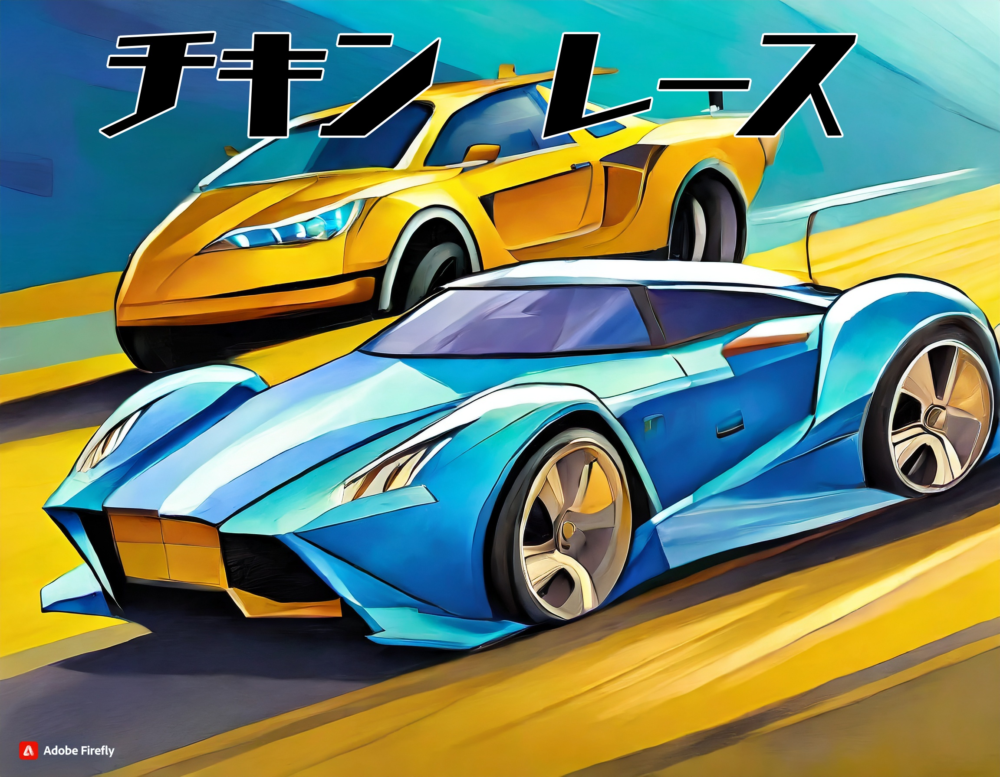

高専祭(2年時)
チキンレース ...2年時の高専祭で6人班で作成したゲーム
これらの車や看板、オンオフボタンなどを作成し、主にデザインを担当した。また、タイトル画面をAIを使って作成した。



チキンレース ...2年時の高専祭で6人班で作成したゲーム
これらの車や看板、オンオフボタンなどを作成し、主にデザインを担当した。また、タイトル画面をAIを使って作成した。
ゾンビFPS ...3年時の高専祭で5人班で作成したゲーム
Wiiリモコンを使用した銃の作成を行った。